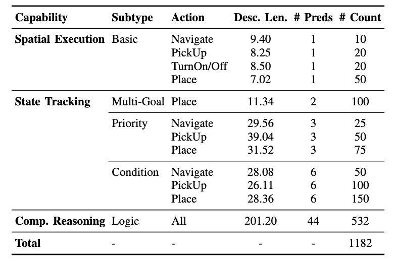
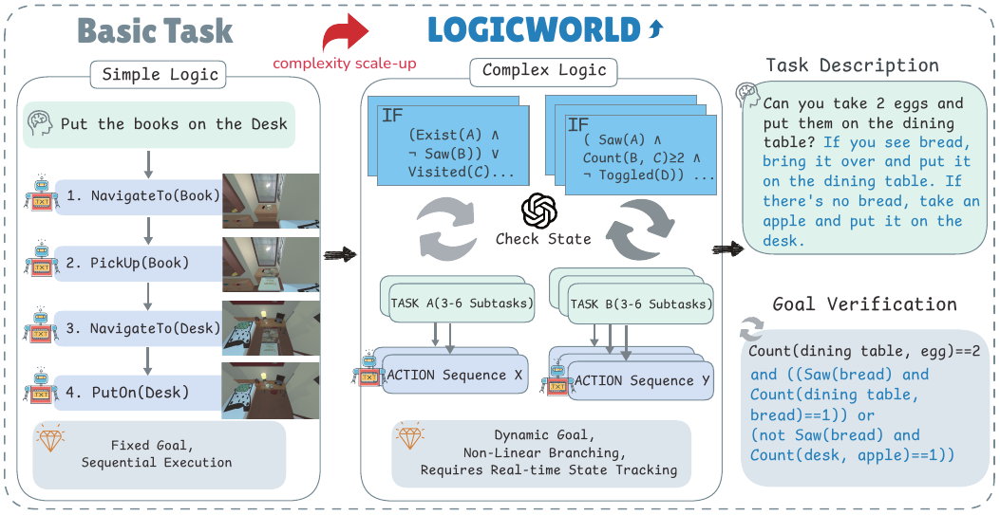
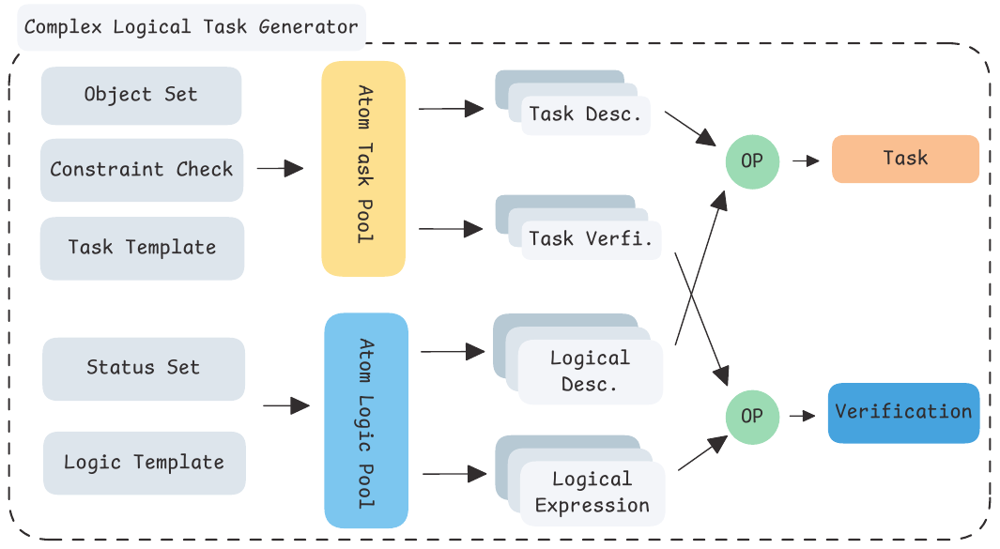
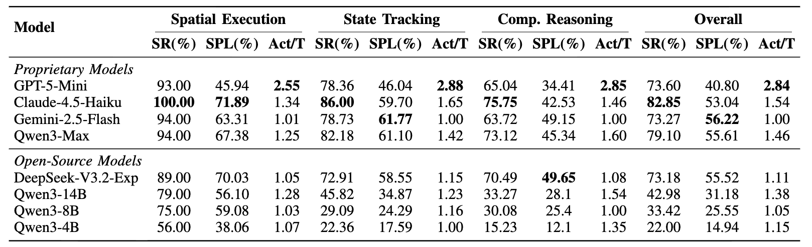
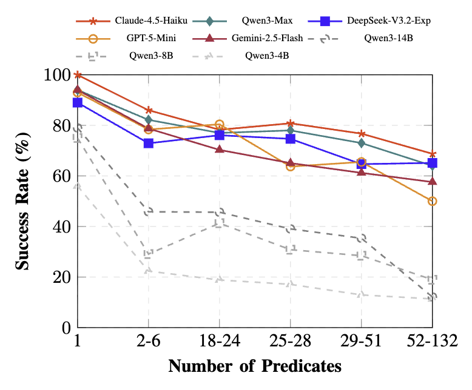
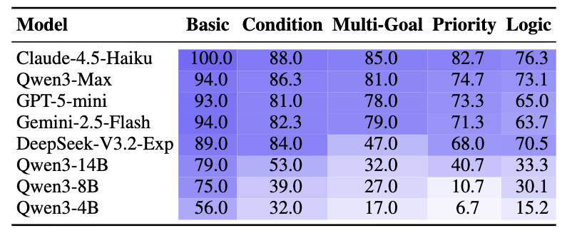
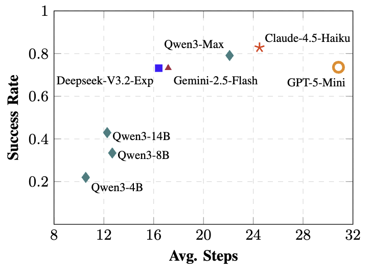
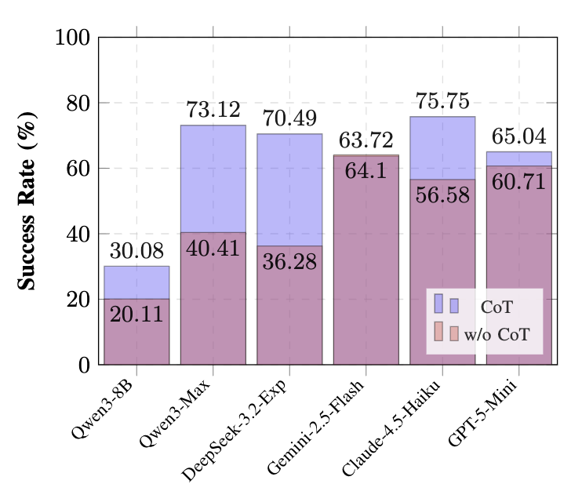

IROS 2026
Automated Deep Logic Generation for Interactive Reasoning in Embodied Agents
Gangao Liu1,2, Huixin Xu3,4, Mengna Wang1,2, Peng Li*1,2,3
1 Institute of Software, Chinese Academy of Sciences, Beijing, China
2 University of Chinese Academy of Sciences, Beijing, China
3 University of Chinese Academy of Sciences, Nanjing, China
4 Nanjing University of Posts and Telecommunications, Nanjing, China
* Corresponding author: lipeng@iscas.ac.cn
Conditional · dynamic · non-linear — the robot may need to explore, evaluate, and branch its plan.
ALFRED-style tasks tend to be static and sequential — goal lists and simple conjunctions. Logic itself is under-tested.
1,182 tasks · 1,000 PROCTHOR-10K scenes · 16 room layouts · 95 object categories


Left: traditional static tasks with a fixed, linear path · Middle: LOGICWorld, execution governed by deep propositional logic · Right: auto-generated task descriptions + goal verification functions

Each task becomes a second-person story with motivation and background. Conditions are woven into narrative — no "if…else" lists — while every branch and fallback is preserved.
Automatic checks: object names & quantities verbatim, ordering, no branch-like phrasing, no metadata leakage — with feedback-driven retries for failures.
1,182 / 1,182 stories generated for the full test set, each paired with its original task and unchanged verification function.
Same logical content — closer to how people actually speak. Fidelity rules forbid adding or dropping conditions, actions, objects, or orderings.
States like Exist(Apple in Fridge) are never broadcast — the agent must open the fridge to resolve them.
Reflect → Reason → Plan → emit 1–k primitive actions per turn. Chunks halt on failure with fresh feedback.


Best model (Claude-4.5-Haiku): 100% → 86% → 75.8% across the three levels · Qwen3-4B drops to 15% on Logic tasks


Steep decline from Condition to Priority and Logic subtypes · frontier models reach high SR in 22–25 steps, smaller models stall below 45% SR

Code, tasks and scenes are open-sourced — we hope the community finds it useful.
Thank you! · Questions welcome